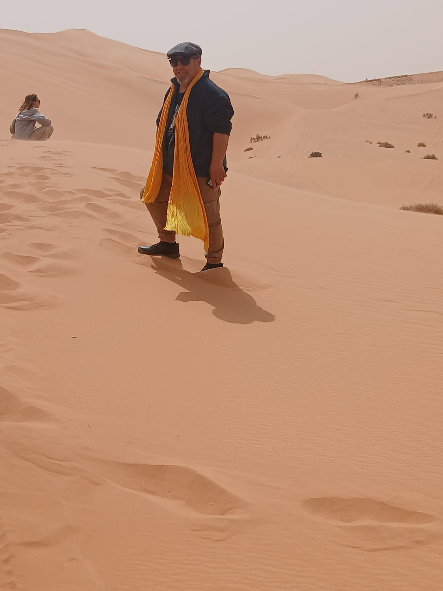

Renaître pour t’aimer
Comme l’aube est née
pour embrasser le jour,
Comme la mer,
sans jamais se lasser,
Revient déposer ses vagues
sur le rivage.
Je veux t’aimer
au-delà des mots,
Là où les silences
deviennent des serments,
Je serai là,
dans le silence
comme dans la tempête,
à l’heure
où le monde te sourit
comme à celle
où il te semble trop lourd.
Je ne savais plus
que mon cœur
Pouvait encore trembler
sous un regard,
Ni que le désir,
longtemps endormi,
Pouvait renaître
au détour d’un sourire.
Je veux t’aimer
pour panser mes maux,
Et rendre à mon cœur
ses printemps.
Je serai ton refuge
quand le ciel s’assombrit,
ton épaule
lorsque tes forces vacillent,
la main qui se tend
sans rien demander,
et ce cœur obstiné
qui continuera de battre
au rythme secret du tien.
Tu es apparue,
Belle
comme une promesse,
Et quelque chose en moi
s’est réveillé :
Un feu
que je croyais éteint,
Un élan
que je croyais perdu.
Je veux t’aimer
au-delà de l’amour,
Au-delà des nuits,
au-delà des jours,
Au nom des lois
de mon amour,
j’aurai quelques droits
que nul tribunal
ne saurait juger :
le droit
de veiller
sur tes rêves,
de recueillir
tes larmes,
de défendre
tes fragilités,
et surtout …
Te trouver
dans mes rêves
les plus doux,
Et perdre
le temps
en le partageant
avec toi.
le droit
de t’emprisonner
dans mon étreinte,
non pour retenir
tes pas,
mais pour que,
lorsque tu en auras besoin,
tu puisses oublier
un instant
la dureté du monde
contre la douceur
de mes bras.
Ton nom habite
mes pensées,
Ta présence éclaire
mes silences,
Et chaque battement
de mon cœur
Semble murmurer
ton nom.
Je veux
que ton sourire
apaise mes blessures,
Que ta présence
Colmate mes fêlures,
Car je ne veux pas
être ta cage,
je veux être
ton abri.
Je ne veux pas
posséder ton cœur,
je veux mériter
d’y demeurer.
Si aimer
est une destinée,
Alors je ne veux pas
lui échapper.
Car parmi
tous les chemins
de la vie,
J’ai trouvé le mien
dans tes yeux.
Et que
dans la douceur
de tes bras,
Je retrouve celui
que je ne croyais plus être,
parfois.
Et où
que la vie t’emporte,
quel que soit le temps
qui passe,
il restera en moi
une place
où ton nom
sera toujours
accueilli
comme une lumière
qui n’a jamais appris
à s’éteindre.
Je veux t’aimer
sans mesure ni raison,
Comme une prière
offerte à l’horizon,
Et lorsque nos âmes
toucheront les cieux,
Je veux danser
avec toi …
et les anges,
à deux.
Car je ne veux pas
seulement t’aimer
aujourd’hui,
Je veux t’aimer
dans chaque souffle,
chaque nuit,
Jusqu’à ce que
nos deux cœurs,
loin du temps
et des tourments,
Ne sachent plus
s’ils s’aiment …
Ou s’ils sont devenus
éternels,
simplement.
Et si le temps
devait tout effacer,
Je ne demanderais au ciel
Qu’une seule
et unique chose :
Renaître à nouveau …
Pour te retrouver,
Et t’aimer encore
et encore.
Djamel Metref
At Yenni le 14 Août 2026
← Tous les poèmes
Renaître pour t’aimer
Amour et désir · Résilience et espoir